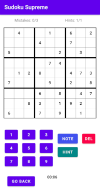

Back to main page
Sudoku Supreme

Features
- Randomly generated sudokus with easy, normal, hard and expert difficulty
- Add notes to unfilled cells
- Notes are automatically removed when the noted number is filled on the same subgrid or line
- One hint per game. Reveals the correct number in an unfilled cell.
- Timer and statistics
- Best time
- Average time
- Win percentage
- Amount of played games
- Amount of won games
- Automatic checking of correct numbers. Three mistakes per game.